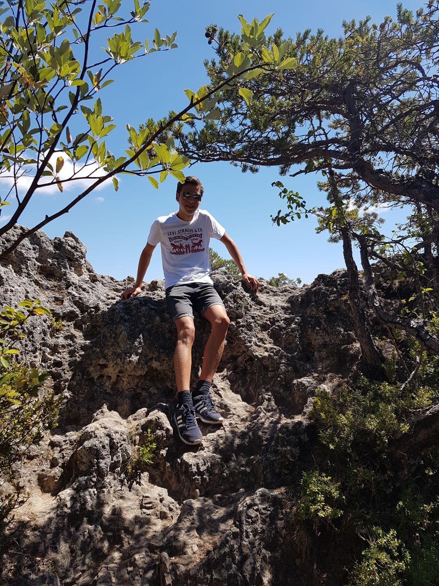

Home
Ik ben Mats Verlinden en dit is mijn portfolio
In deze portfolio kun je informatie over mij vinden. Over mijn school, werk, hobby's enzovoort. Hier een kleine samenvatting:

Op de middelbare school ben ik geslaagd voor mijn MAVO diploma. Daarna ben ik Applicatie ontwikkeling gaan doen op het Da vinci college. Daar ben ik nu nogsteeds bezig met mijn opleiding, deze opleiding duurt 3 jaar.
S'avonds moet ik vaak werken. Mijn eerste bijbaantje was als krantenbezorger, daarna ben ik naar de supermarkt Coop gegaan en daarna naar de supermarkt Dirk van den Broek. Als ik werk is dat meestal van 5 tot 7.
Ook doe ik een sport. Vroeger heb ik lang Tennis gedaan maar nu doe ik aan Korfbal. Bijna elke zaterdag heb ik een wedstrijd en elke vrijdag hebben we training.
Op de momenten dat ik niet op school ben, niet hoef te werken en geen sport doe. Dan ga ik meestal een film of serie kijken of ik ga gamen met vrienden.